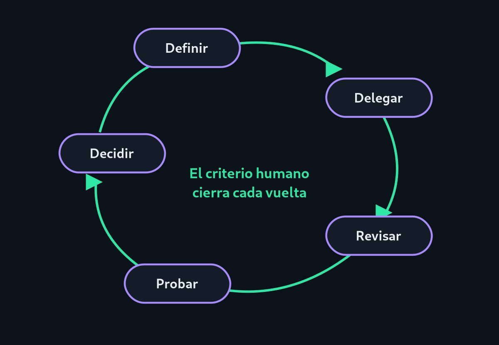

Código repetitivo
Estructuras estándar, formularios, conversiones de formato.
Si el asistente escribe parte del código, ¿qué hace la persona? Su trabajo se desplaza de teclear a especificar, supervisar y decidir.
Nadie sabe con exactitud cómo evolucionará la profesión. Lo que sí se observa es un cambio de énfasis: menos tiempo en la sintaxis y más en entender el problema, evaluar propuestas y garantizar la calidad.
Estas son tendencias, no predicciones cerradas: dependen de cómo mejoren las herramientas y de las decisiones de cada organización.

| Aspecto | Antes | Con asistentes de IA |
|---|---|---|
| Escritura de código | Cada línea la escribe la persona. | La persona especifica y corrige borradores. |
| Búsqueda de ayuda | Foros y documentación. | Consultas con contexto, contrastadas con fuentes oficiales. |
| Depuración | Lectura de errores y pruebas manuales. | Hipótesis del asistente que hay que confirmar. |
| Revisión | Se revisa código de otras personas. | También se revisa código generado por máquinas. |
| Aprendizaje | Sintaxis y bibliotecas. | Fundamentos, diseño y criterio para evaluar. |
Filtra las tareas según lo fácil que es apoyarse en la IA. Es una clasificación orientativa, no una regla.
Estructuras estándar, formularios, conversiones de formato.
Pasar una función de un lenguaje a otro como punto de partida.
Borradores de pruebas unitarias y comentarios de funciones.
Resúmenes de qué hace un módulo heredado.
Hablar con usuarios, detectar necesidades y definir qué construir.
Elegir entre alternativas con costos, plazos y riesgos distintos.
Decidir qué es aceptable y asumir la responsabilidad del resultado.
Evaluar impactos, explicar decisiones y trabajar en equipo.
Para quienes estudian programación: usar IA para entender es distinto de usarla para evitar pensar. Intenta primero, pide ayuda después y explica con tus palabras lo que entregas. Esa práctica es la que construye criterio.